Monocular object-distance estimation on an ESP32-S3
How to tell how far away a detected person, car or dog is, using one cheap camera and a microcontroller. The survey covers geometry, learned regression, neural depth and hybrid methods, then recommends a first prototype.
Target: ESP32-S3 + OV2640/OV3660Comparison: Raspberry Pi 4/5, JetsonStandalone project, separate from Night Sentinel
published figure from a paper, model card or vendor READMEestimate engineering estimate, not measuredconceptual illustrative diagram
01Executive summary
Bottom line
An ESP32-S3 can range individual objects with one camera. It does not need a dense depth network to do so. The practical design runs an INT8 object detector on the chip, about 7–8 FPS at 224×224 for Espressif's own detectors published. A calibrated geometric model then turns each bounding box into metres, using two independent cues:
Size prior:Z = f·H/h, using a typical class height.
Ground plane:D = hc/tan(θ+α), using the camera's mounting height and tilt.
A tiny regression network (a few thousand parameters) corrects systematic bias. A per-object tracker filters the result over time and reports an uncertainty with every reading.
Main findings:
Dense depth is not necessary, and it is the wrong tool for this chip. The smallest published dense-depth networks need roughly 0.4 GMAC per frame (FastDepth, Wofk et al. 2019) and feature maps several times larger than the S3's 512 KB SRAM. Even the depth foundation models that output metres (Depth Anything V2 Metric, Metric3D v2, Depth Pro, UniDepth V2) have tens to hundreds of millions of parameters. They belong on a Pi or Jetson, or offline as a labelling "teacher".
Geometry is competitive when the scene matches its assumptions. The error model in Fig. 6 assumes an adult standing on flat ground, a camera 2 m high, a calibrated lens and 2 px box jitter. Under those assumptions the fused geometric estimate has a median per-frame error of about 2–4% at 4–10 m and about 7% at 20 m, with 90th-percentile errors of 5–17% model, not measured. Real-world error will be higher until Phase 1 measures it.
The failure modes are systematic, not random. Children, sitting people, dogs of unknown breed, truncated boxes and sloped ground all break the size prior (Fig. 5). That is where a learned residual model and a second geometric cue pay off. More pixels do not fix these errors.
Learned regression beats pure geometry only when trained on your camera. A bounding-box regressor in the style of DisNet (Haseeb et al. 2018) learns class priors and lens quirks for free. It does not transfer across lenses or mounts unless camera intrinsics are among its inputs.
Recommended first prototype (Architecture 3): an ESP32-S3 camera board, Espressif's pedestrian or espdet detector, one-time checkerboard calibration plus a measured mounting height and pitch, geometric fusion, a Kalman filter on inverse distance, and JSON output over UART or MQTT. No extra compute hardware is needed. The only purchases are a tape measure or laser rangefinder for ground truth, and an S3 board if the existing hardware is the original ESP32-CAM.
02Problem definition and objectives
The goal is a small, low-cost, standalone camera module that detects objects and reports each one's approximate physical distance. Example output:
Research question. What is the most practical and computationally efficient way to estimate the physical distance of individual detected objects with a single camera on a low-cost embedded device?
Constraint
Value used in this survey
Primary target
ESP32-S3: dual-core Xtensa LX7 at 240 MHz with 128-bit SIMD (PIE) instructions, 512 KB SRAM, typically 8 MB octal PSRAM and 8–16 MB flash
Camera
OV2640 (2 MP) or OV3660/OV5640 over DVP. QVGA 320×240 or VGA 640×480 working resolution; about 60° horizontal FOV assumed, so f ≈ 277 px at QVGA
Classes
person (priority), car, dog, plus other COCO classes as available
Range of interest
1–20 m (surveillance and robotics distances)
Outputs
class, confidence, distance (m), uncertainty, reliability flag, track ID
Non-goals
Visually impressive dense depth maps; integration with Night Sentinel
03Monocular depth estimation fundamentals
What depth estimation is
Depth estimation assigns each image point (or each object) its distance from the camera. Monocular depth estimation does this from one image taken from one viewpoint. Because there is no second view, it has to rely on cues: known object sizes, perspective, texture gradients, occlusion, the height of a point in the image relative to the horizon, and priors a network has learned.
Relative depth versus metric depth
Relative (affine-invariant) depth gives the order and shape of the scene up to an unknown scale and shift: d_true ≈ s·d_pred + t. MiDaS, Marigold and Depth Anything V2 (base checkpoints) work this way, often as inverse depth (disparity).
Metric depth is in metres. It needs the network to know or infer the camera (focal length) and the absolute scale of the world. Examples are Metric3D v2, ZoeDepth, UniDepth V2, Depth Pro and the Depth Anything V2 Metric checkpoints.
For this project only metric output is useful. A relative map still needs one scale reference, such as a known object or the ground plane, before it can report metres.
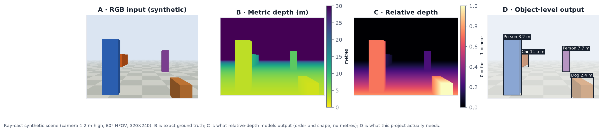
Fig. 1synthetic, exact The same ray-traced scene shown four ways: (A) RGB input, (B) exact metric depth per pixel, (C) the unitless relative depth a relative-depth model would produce, and (D) the object-level output this project needs. Panel D carries all the information the module has to report, and it is computed from four boxes rather than 76,800 pixels. Source: scripts/make_figures.py.
Dense depth versus object-level distance
A dense model predicts a value for every pixel and then aggregates it inside each box, typically with a median or a low percentile. An object-level method predicts one number per detection, straight from box geometry, keypoints or a crop. The object-level task is far smaller: a few numbers per object instead of a full-resolution map. It also avoids a known weakness of dense models, which smear depth across object boundaries so that background pixels leak into the box statistics.
Monocular scale ambiguity
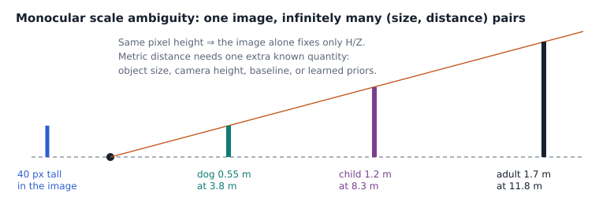
Fig. 2conceptual A 0.55 m dog at 3.8 m, a 1.2 m child at 8.3 m and a 1.7 m adult at 11.8 m all project to the same 40 px. The image alone fixes only the ratio H/Z. Every monocular method breaks this ambiguity with one extra known quantity.
Camera intrinsics and extrinsics
The pinhole camera maps a 3D point (X, Y, Z) in camera coordinates to pixel (u, v):
⎡u⎤ 1 ⎡f_x 0 c_x⎤ ⎡X⎤ K = intrinsics (focal lengths, principal point)
⎢v⎥ = ─ ⎢ 0 f_y c_y⎥ ⎢Y⎥ [R | t] = extrinsics (camera pose in the world)
⎣1⎦ Z ⎣ 0 0 1 ⎦ ⎣Z⎦ plus lens distortion k1, k2, p1, p2, k3
Focal length in pixels ties the optics to the pixel grid: f_px = f_mm · (W_px / sensor_width_mm) = (W_px/2) / tan(HFOV/2). For a 60° HFOV, f is about 277 px at 320 px width and about 554 px at 640 px. Doubling the resolution doubles f and halves the relative error from one pixel of box jitter. Extrinsics matter for the ground-plane method: mounting height h_c and pitch θ (roll should be close to zero).
Calibration and why it matters
OV2640 modules are sold with many interchangeable lenses (roughly 66° to 160° diagonal). A focal-length error passes straight through to distance: a 5% error in f gives a 5% error in Z. Wide lenses also add strong barrel distortion, which bends box heights near the edge of the frame. Calibrating with a checkerboard (Zhang's method, OpenCV calibrateCamera) gives K and the distortion coefficients, usually with a reprojection error below 0.5 px. Calibrate once per lens and resolution.
Why one image is fundamentally hard
Projection is many-to-one. Depth along each ray is lost (Fig. 2).
Learned cues are statistical. A network trained on driving scenes has learned the camera heights and object sizes of driving scenes.
Metric output requires knowing the camera. A model that ignores intrinsics makes errors proportional to the focal-length mismatch.
Error grows with distance. In both geometric models the relative error rises roughly linearly with Z, because the measured pixel quantity shrinks as 1/Z.
Monocular versus other ranging sensors
Sensor
Principle
Typical accuracy
Range
Cost
Power
Embedded fit
Monocular camera
Priors: size, ground plane, learned cues
Roughly 5–15% of range, scene-dependent
Limited by pixels on target
$5–15 module
~0.1–0.3 W sensor
Excellent; also gives class labels
Stereo camera
Triangulation over baseline b: Z = f·b/d
Error grows as Z²·σd/(f·b); good under ~10 m with 6–12 cm baseline
Single-zone sensors suit MCUs but have no object identity
LiDAR
Pulsed or FMCW laser ranging
cm-level
10–200 m
$100 (2D) to $1000s (3D)
2–15 W
Bulky; sparse at long range
Ultrasonic
Echo time of flight
~1 cm, wide beam
0.02–4 m
$2
<0.1 W
Cheap, but one wide cone and no object identity
Accuracy, cost and power ranges are typical datasheet-class values, rounded estimate.
04Technical approaches
Approach A · Geometric distance estimation
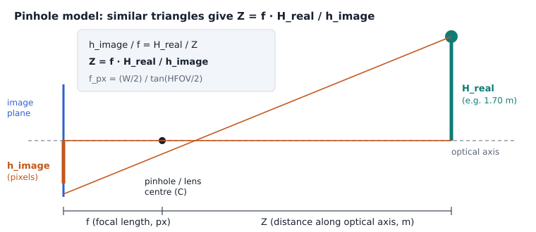
Fig. 3conceptual Similar triangles: h/f = H/Z, so Z = f·H/h.
A1 · Size prior (pinhole)
Z = f_y · H_class / h_px (use box height for upright people; width for side-on cars)
σ_Z / Z ≈ √[(σ_H/H)² + (σ_h/h)² + (σ_f/f)²]
Typical class priors: adult 1.70 m (σ about 0.09 m across a mixed population), car height 1.5 m (width 1.8 m, length 4.5 m), dog shoulder height 0.25–0.85 m depending on breed. Example: at QVGA (f = 277 px) an adult at 10 m is about 47 px tall. A 2 px box error then adds about 4%, and the height prior adds about 5% (Fig. 5).
A2 · Ground plane (foot point)
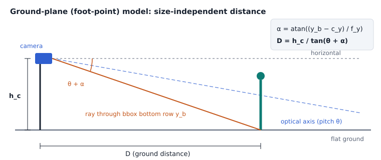
Fig. 4conceptual The ray through the bottom edge of the box meets the ground at D. This needs no knowledge of the object's size, only that it touches flat ground.
α = atan((y_bottom − c_y) / f_y) D = h_c / tan(θ + α)
∂D/∂(angle) = −(D² + h_c²)/h_c → error grows ≈ D²; a 0.5° pitch error at 10 m with h_c = 2 m is ≈ 0.45 m
The ground-plane cue does not depend on object size, so it covers dogs, children and seated people where the size prior fails. It needs the feet to be visible and the ground flat. The camera must also be high enough for a usable angle: at 1 m mounting height the method degrades quickly beyond about 10 m.
Other geometric ingredients
Box centre and perspective. Off-axis objects are farther than their optical-axis depth: range = Z / cos(φ), where φ is the angle of the box centre from the optical axis.
Orientation and pose. A car's box width changes by up to 2.5× between front and side views, so use height for cars. Sitting people are about 0.55–0.65× standing height, which can be flagged by aspect ratio (h/w < ~1.8).
Truncation. A box touching the frame edge gives a wrong height. Flag it and fall back to the other cue.
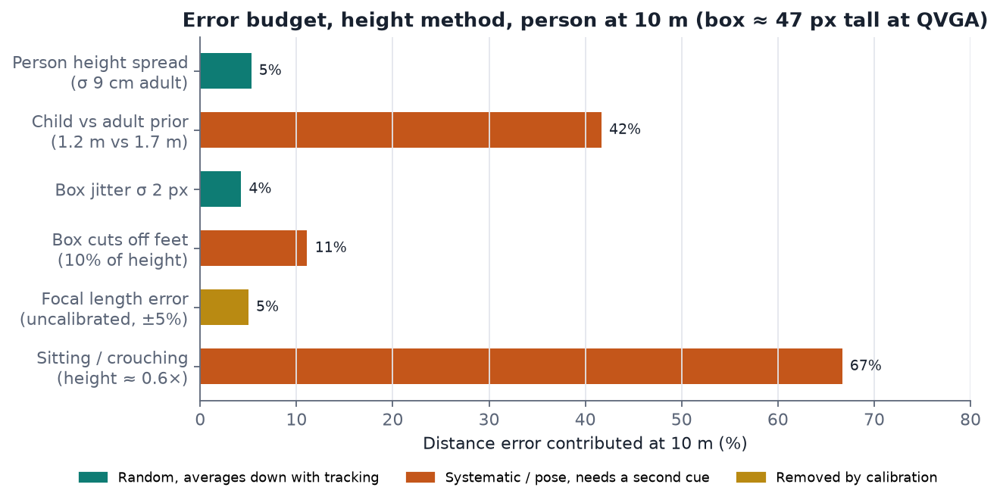
Fig. 5computed Error budget for the size-prior method, adult at 10 m, QVGA. The large bars are systematic: wrong class prior, pose and truncation. Averaging over time cannot remove them; a second cue or learned correction can.
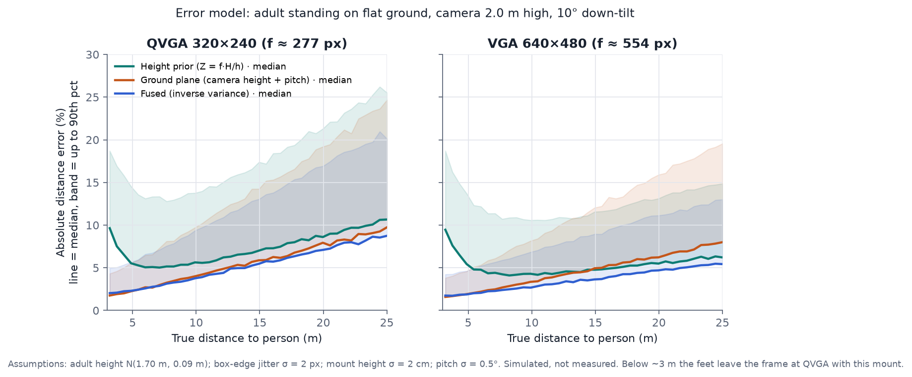
Fig. 6Monte-Carlo error model, not measured Median and 90th-percentile absolute error, adult standing, camera 2 m high and tilted 10° down. The ground-plane cue wins up close and the size cue holds up better far away at VGA. Fusing them by inverse variance is never worse than either alone. The rise in size-prior error below about 5 m comes from foreshortening: a tilted camera looking down at a nearby person sees a shorter box than f·H/Z. That bias is exactly what a learned residual corrects.
How accurate is geometry without a neural network? For upright adults on flat ground with a calibrated camera, the model predicts a median of 2–5% and a 90th percentile of 5–14% over 4–15 m model. For cars at a known orientation, expect about 10–20%. For dogs, the size prior alone is about ±40% because breeds vary so much; the ground-plane cue alone gives about 5–10% if the feet are visible. These numbers must be confirmed in Phase 1.
Approach B · Object-specific distance regression
A small network learns distance = g(features) per detection. The ancestor of this approach is DisNet (Haseeb et al. 2018): a 3-hidden-layer MLP of 100 units each, whose inputs are 1/h, 1/w, 1/diag of the box plus class average sizes. That is about 21k parameters, computed from the stated layer sizes.
Variant
Inputs
Params
ESP32-S3 INT8
Bbox MLP (DisNet-style)
1/h, 1/w, box centre (u,v), aspect, class one-hot, f, hc, θ
2k–21k
Yes; under 1 ms per box estimate
Residual MLP (recommended)
Same features plus the two geometric estimates; predicts log-ratio correction and log σ
~5k
Yes
Keypoint MLP (MonoLoco)
17 COCO keypoints from a pose network
small MLP
The MLP fits; the pose network is the bottleneck
Crop CNN
64×64 crop + box features → MobileNet-style trunk
0.2–1 M
Marginal: tens to hundreds of ms per box estimate
Detector head (Dist-YOLO)
Extra distance output per anchor, trained jointly
+ ~1%
Feasible only if you retrain the S3 detector
Loss. Regress log Z, since distance errors are multiplicative, with a Gaussian or Laplace negative log-likelihood so the network also outputs σ (as MonoLoco does with a Laplace loss). An alternative is an L1 loss on the ratio Z_pred/Z_true.
Generalization. A pure-box regressor quietly learns the training camera's f, hc and θ. Feed them as inputs, or predict a correction factor on top of geometry. The residual form generalizes much better because the physics is built in.
Data. 2–5k labelled boxes from the deployment camera, or synthetic data (Section 08), is enough to train an MLP of this size.
Verdict: runs easily on the ESP32-S3 with INT8 (ESP-DL or TFLite Micro), and per-box cost is negligible next to the detector. It will beat pure geometry on systematic biases such as foreshortening, pose and class priors. It will not beat geometry on random noise, because both see the same box.
Approach C · Lightweight monocular depth networks
Small encoder–decoder CNNs predict a low-resolution depth map. FastDepth (MobileNet encoder with depthwise NNConv5 decoder, pruned with NetAdapt) reports 0.37 GMAC at 224×224, RMSE 0.604 m and δ1 0.771 on NYU Depth v2, at 178 FPS on a Jetson TX2 GPU and 27 FPS on its CPU published. Lite-Mono (3.1M parameters; 2.2M "tiny" variant) is a self-supervised CNN-Transformer hybrid trained on KITTI. Like Monodepth2, its outputs are only scale-correct after median scaling against ground truth, so it is relative depth unless fine-tuned with metric labels.
On the S3: FastDepth-class compute (0.37 GMAC), with 224×224 feature maps that spill into PSRAM, is estimated at about 0.7–5 s per frame estimate. A purpose-built 64×48 depth head (about 20–50 MMAC) might reach 1–3 FPS, but no published ESP32 implementation exists. It is research, not engineering.
Approach D · Dense depth foundation models
Model
Architecture / training
Output
Size
License
Deployment
Depth Anything V2 (2024)
DINOv2 ViT encoder + DPT decoder; teacher trained on synthetic data, pseudo-labels 62M real images
Relative; Metric variants fine-tuned on Hypersim (indoor, ≤20 m) and Virtual KITTI 2 (outdoor, ≤80 m)
24.8 / 97.5 / 335.3 M pub
Small: Apache-2.0; larger: CC-BY-NC
Pi 5 (Small, slow), Hailo or Jetson
Metric3D v2 (2024)
ViT (S/L/g2) + RAFT-style refinement; canonical camera space transform
Metric, sharp boundaries; 2.25 MP in 0.3 s on a V100 pub
ViT-L class
Apple sample-code license
Desktop GPU
UniDepth V2 (2025)
ViT + camera module; self-prompting camera prediction
Metric, camera-free
ViT-S/B/L
CC-BY-NC 4.0
Jetson / GPU
ZoeDepth (2023)
MiDaS (BEiT/Swin) + metric bins module
Metric (NYU / KITTI heads)
~345 M (BEiT-L)
MIT
GPU
Marigold (CVPR 2024)
Stable Diffusion U-Net fine-tuned for depth; iterative denoising
Affine-invariant (relative)
~0.9 B (SD 2)
Apache-2.0 code
GPU, seconds per image
Monodepth2 (2019)
ResNet-18 encoder; self-supervised from video
Relative (median-scaled)
14.3 M
Non-commercial (Niantic)
Pi (low res)
Lite-Mono (2023)
CDC + LGFI CNN-Transformer hybrid
Relative (self-supervised)
3.1 M pub
see repo
Pi, Jetson
FastDepth (2019)
MobileNet + NNConv5, pruned
Metric on NYU (indoor)
0.37 GMAC
MIT (check repo)
Pi, Jetson; S3 impractical
Only the 24.8/97.5/335.3 M DAv2 counts, FastDepth figures, Lite-Mono and Monodepth2 parameter counts, and the Depth Pro timing were re-checked against primary sources for this report. Verify the other sizes and licenses against each repository before relying on them.
None of these run on an ESP32-S3. A ViT-S has about 22M parameters, and its attention plus activation memory at 518 px input is far beyond the chip's RAM. Transformer operators (LayerNorm, GELU, softmax attention) are also poorly supported by MCU INT8 kernels. Their value here is offline: pseudo-labelling training data with metric distances, and acting as a reference for benchmarking the embedded method.
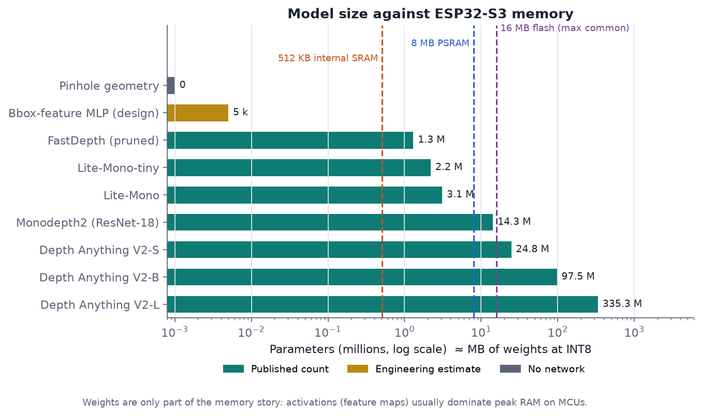
Fig. 7 Parameter counts (≈ MB of INT8 weights) against ESP32-S3 memory. Fitting in flash is necessary but nowhere near sufficient: compute and peak activation memory are the binding limits.
Approach E · Temporal and motion-based estimation
Stationary camera (surveillance). No ego-motion and no parallax for structure-from-motion, so temporal information helps by filtering, not by triangulating. Track each object (IoU or SORT), run a Kalman filter on inverse distance with a constant-velocity model, and reject outliers. Random jitter (σh) shrinks roughly as 1/√N over N frames; bias does not. A second trick: accumulate foot points over hours to self-calibrate the ground plane (fit hc and θ from people of known average height walking through the scene).
Moving camera (robot). Monocular visual odometry and structure-from-motion recover depth only up to scale. Wheel odometry or an IMU supplies the metric baseline, and then triangulation across frames gives true metric depth for static objects. Moving objects break this. Optical flow and SfM are far beyond the S3's budget at useful resolution.
Temporal consistency in video-depth networks is a GPU-class technique and not relevant on the MCU.
Approach F · Hybrid estimation
flowchart LR
CAM["Camera frame"] --> DET["INT8 detector box, class, conf"]
DET --> GEO1["Size prior Z = f·H/h"]
DET --> GEO2["Ground plane D = hc / tan(θ+α)"]
DET --> FEAT["Box features u, v, w, h, aspect"]
GEO1 --> FUSE["Inverse-variance fusion"]
GEO2 --> FUSE
FEAT --> MLP["Residual MLP bias + σ"]
FUSE --> MLP
MLP --> KF["Tracker + Kalman on 1/Z"]
KF --> OUT["class · m · σ · ID"]
CAL[("Calibration K, hc, θ")] -.-> GEO1
CAL -.-> GEO2
Item 1 plus a residual MLP that corrects pose, truncation and foreshortening bias and outputs σ.
Item 2 plus a tracker and Kalman filter, giving stable readings and a reliability flag.
Install-time dense depth on a laptop (Depth Anything V2 Metric or Depth Pro) to cross-check hc and θ once. No dense model is needed at runtime.
05Top five approaches, ranked
The ranking weighs, in order: metric accuracy, ESP32-S3 feasibility, RAM and flash, and latency (all very high priority); then power, generalization, quantization, open source and ease of experimentation (high priority). The shortlist deliberately spans hybrid, geometric, regression, lightweight neural and metric foundation approaches.
Depth Anything V2 Metric-Small (as teacher / Pi path)
Metric foundation
Good in-domain, scale drifts on odd cameras
No
~25 M params
n/a (Pi: seconds)
Best of all on images
Yes (Small: Apache-2.0)
1
Hybrid geometric–learned estimator with tracking
category: hybrid
Origin
A system design assembled for this project from DisNet (Haseeb et al. 2018), MonoLoco's uncertainty loss (Bertoni et al., ICCV 2019), and classic ground-plane and Kalman tracking.
Working principle
Two physical cues give metres. A tiny network learns the remaining bias and a confidence. A tracker filters each object over time.
Fused geometry model: about 2–4% median at 4–10 m model. Residual correction expected to remove the near-range and pose bias. Target for Phase 2: ≤8% median, ≤15% p90 at 2–15 m target.
Parameters / size
~5k parameters, about 5 KB INT8, plus a calibration struct of under 100 bytes.
RAM
Under 50 KB including 32 tracks; the detector dominates.
Latency
Under 1 ms for all objects est, so end-to-end time is detector-bound at about 125 ms (ESP-DL pedestrian 224×224) pub.
Quantization
MLP to INT8 with ESP-DL or TFLM. Geometry stays in float32, which the S3 handles in hardware.
ESP32-S3
Yes. Recommended.
Raspberry Pi
Trivial. The same code runs at full camera rate.
Limitations
Needs calibration and a measured mount. Assumes flat ground for the second cue. Seated or truncated people need flags. Generalizes only as far as its training-data mounts.
Object-specific distance regression (DisNet-style MLP; MonoLoco for people)
category: regression
Origin
Haseeb et al., "DisNet: a novel method for distance estimation from monocular camera," PPNIV @ IROS 2018. Bertoni, Kreiss, Alahi, "MonoLoco," ICCV 2019. Zhu & Fang, "Learning object-specific distance from a monocular image," ICCV 2019.
Working principle
Learn the mapping from box geometry (or human keypoints) to distance directly from labelled examples.
Architecture
DisNet: 6 inputs → 3×100 hidden → 1 output (about 21k parameters, computed). MonoLoco: a fully connected network with residual blocks over 2D keypoints and a Laplace-likelihood head for confidence intervals.
Input / output
Box features or 17 keypoints → distance (+ σ for MonoLoco).
Depth type
Metric, per object.
Accuracy
MonoLoco reports beating prior monocular methods on KITTI and nuScenes, and outperforming a stereo baseline for distant pedestrians pub. DisNet reports results on its own non-public dataset. No cross-paper benchmark is comparable to this project's camera.
Parameters / size
~2k–21k for a box MLP; MonoLoco's MLP is small, but its pose front end (OpenPifPaf) is tens of MB.
RAM
Box MLP: a few KB. Pose front end: hundreds of MB, not for the MCU.
Latency
Box MLP under 1 ms on the S3 est.
Quantization
Fully INT8-friendly (dense + ReLU).
ESP32-S3
Box MLP: yes. Keypoint variant: no; it needs a pose network.
Raspberry Pi
Yes, including MonoLoco at low FPS on a Pi 5 est.
Limitations
Silently learns the training camera. Needs labelled distances. Poor extrapolation beyond the training range.
Depth Anything V2 Metric (Small) as teacher and Pi path
category: metric foundation model
Origin
Yang et al., "Depth Anything V2," NeurIPS 2024 (arXiv 2406.09414).
Working principle
Large-scale distillation: a ViT-g teacher trained only on precise synthetic depth pseudo-labels 62M real images, which train smaller students; metric heads are fine-tuned on Hypersim and Virtual KITTI.
Architecture
DINOv2 ViT-S encoder + DPT decoder.
Input / output
RGB, 518 px short side by default → dense metric depth.
Depth type
Relative (base) or metric (fine-tuned, indoor ≤20 m and outdoor ≤80 m checkpoints).
Accuracy
State of the art among relative-depth models on standard zero-shot benchmarks pub. Metric accuracy degrades when the camera differs from the training domain; it does not take intrinsics as input.
Parameters / size
24.8 M (Small) pub, about 100 MB in FP32.
RAM
Hundreds of MB at runtime.
Latency
No verified Raspberry Pi 5 figure was found. Expect seconds per frame on the Pi CPU at reduced input sizes; benchmark it yourself est.
Quantization
FP16 or INT8 via TensorRT on Jetson; ViT INT8 needs care.
ESP32-S3
No.
Raspberry Pi
Workable offline or at about 0.2–1 FPS for low-rate verification est.
Limitations
Domain-dependent metric scale; heavy; licenses vary by size and checkpoint.
Fig. 9 Latency figures. Teal bars are published (each on its own hardware: esp-nn README, ESP-DL component README, FastDepth paper). Gold bars are estimates. Do not read across hardware rows as like-for-like.
06Edge deployment feasibility
A · ESP32-S3
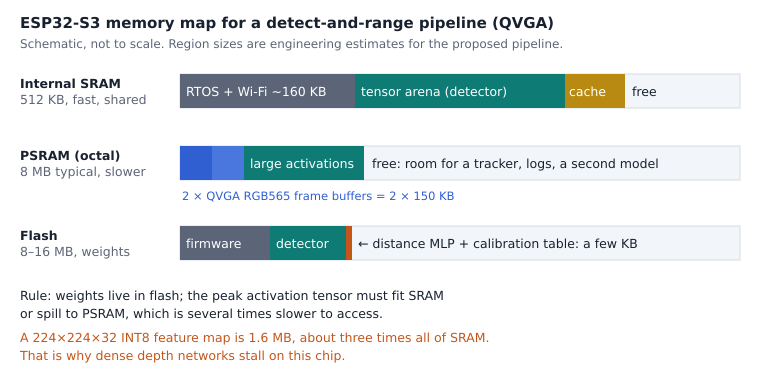
Fig. 10schematic Where things live on the S3. The peak activation tensor, not the weight count, decides whether a model fits.
Compute. Two LX7 cores at 240 MHz with the PIE 128-bit SIMD extension (INT8/INT16 MACs). ESP-NN and ESP-DL ship hand-optimized kernels for it.
Memory. 512 KB SRAM shared with the RTOS and Wi-Fi. PSRAM (commonly 8 MB octal) holds frame buffers and large tensors at a significant speed penalty. Weights execute from flash through the cache.
Measured throughput. The TFLM person-detection example (96×96 grayscale) runs in 47 ms with ESP-NN in recent esp-nn READMEs (54 ms in older tables) versus 2300 ms with plain C kernels pub. ESP-DL's pedestrian_detect (224×224×3, INT8) lists about 10.6 + 113.3 + 1.1 ms for pre-processing, model and post-processing pub. espdet_pico lists 126.2 ms and ">7 FPS" at 224×224 pub. These exclude camera capture and Wi-Fi.
Operators. Conv, depthwise conv, pooling, add, concat, ReLU and dense are well supported. Attention, LayerNorm, GELU and large upsampling decoders are poorly supported or slow. In practice that means CNNs yes, Transformers no.
Power. An S3 with camera and Wi-Fi active typically draws a few hundred mA at 3.3–5 V, roughly 0.5–1.5 W estimate. Measure it with a USB power meter in Phase 4.
The original ESP32 (ESP32-CAM) lacks the SIMD extension, and the same models run several times slower. If the Night Sentinel hardware is a classic ESP32-CAM, budget for an S3 board (XIAO ESP32S3 Sense, ESP32-S3-EYE or a Freenove S3 CAM).
Capability on ESP32-S3
Feasible?
Evidence
1. Object detection
Yes, about 7–8 FPS at 224×224 for person/pedestrian; multi-class COCO detectors are slower
ESP-DL READMEs pub
2. Geometric distance
Yes, negligible cost
Closed-form maths
3. Small NN regression
Yes, under 1 ms per box
Op count about 10k MAC est
4. Low-res depth map (≤64×48)
Marginal / research, plausibly 1–3 FPS for a custom tiny network; unverified
No public implementation est
5. Dense depth map (≥224 px)
No at useful rates; seconds per frame and PSRAM-bound
0.37 GMAC FastDepth vs. measured S3 throughput est
B · Raspberry Pi 4 and 5
flowchart LR
CSI["CSI camera libcamera / Picamera2"] --> ISP["ISP Pi 5: RP1 + BCM2712"]
ISP --> CPU["4× Cortex-A76 2.4 GHz Pi 4: 4× A72 1.5–1.8 GHz"]
CPU --> RT["NCNN · ONNX Runtime · TFLite INT8 / FP16 NEON"]
CPU <--> MEM["LPDDR4X 2–16 GB"]
CPU -- "PCIe 2.0 x1" --> NPU["Optional Hailo-8L AI Kit / AI HAT+"]
RT --> OUT["Distances over MQTT / UART"]
NPU --> OUT
Fig. 11 · Raspberry Pi inference path (conceptual)
CPU inference. NCNN and ONNX Runtime with INT8 or FP16 NEON kernels. A Pi 5 is commonly reported at about 2–3× a Pi 4 for CNN inference est. Small YOLO detectors (n-size, 320–640 px) reach several to ~20 FPS on a Pi 5 CPU depending on export and resolution; FastDepth-class depth should reach several FPS; DAv2-Small takes seconds per frame est. One paper benchmarks DAv2 with PyTorch, ONNX Runtime and NCNN, but no verified Pi 5 number was found.
Accelerator. The Raspberry Pi AI Kit / AI HAT+ (Hailo-8L, 13 TOPS; Hailo-8, 26 TOPS) runs compiled CNNs at real-time rates. The Hailo Model Zoo includes depth-estimation networks. Transformer support is limited.
Memory. 4 GB is enough for every model here except large ViTs at full resolution.
C · NVIDIA Jetson
flowchart LR
CAM2["CSI / USB camera"] --> ISP2["ISP + VIC"]
ISP2 --> GPU["Ampere GPU Orin Nano: 1024 CUDA cores"]
GPU <--> UM["Unified LPDDR5 4–8 GB, shared CPU/GPU"]
CPU2["6× Cortex-A78AE"] <--> UM
TRT["TensorRT engine FP16 / INT8"] --> GPU
GPU --> OUT2["Depth + detection real-time"]
Fig. 12 · Jetson Orin Nano inference path (conceptual)
Orin Nano (8 GB): rated 40 TOPS, or 67 TOPS in "Super" mode, with selectable 7 W / 15 W / 25 W power modes. TensorRT FP16 runs ViT-S depth models at interactive rates and YOLO detectors at tens to hundreds of FPS est; benchmark per model.
Original Jetson Nano (Maxwell, 4 GB, 5–10 W) is stuck on JetPack 4 and an old TensorRT. CNNs only; avoid it for new work.
FastDepth's published 178 FPS was on the older Jetson TX2 GPU pub.
Deployment comparison
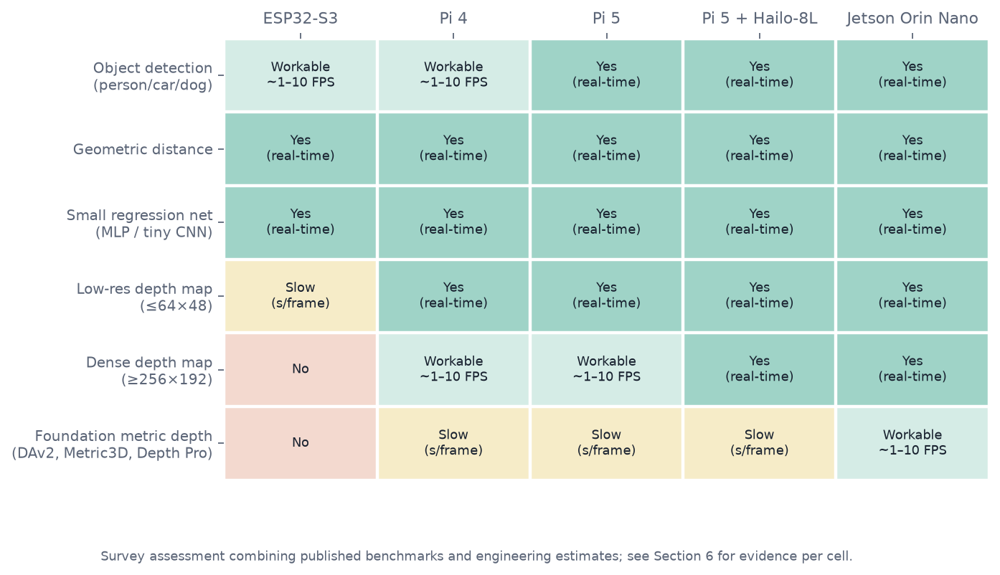
Fig. 13assessment Hardware feasibility matrix, combining the published figures above with engineering estimates.
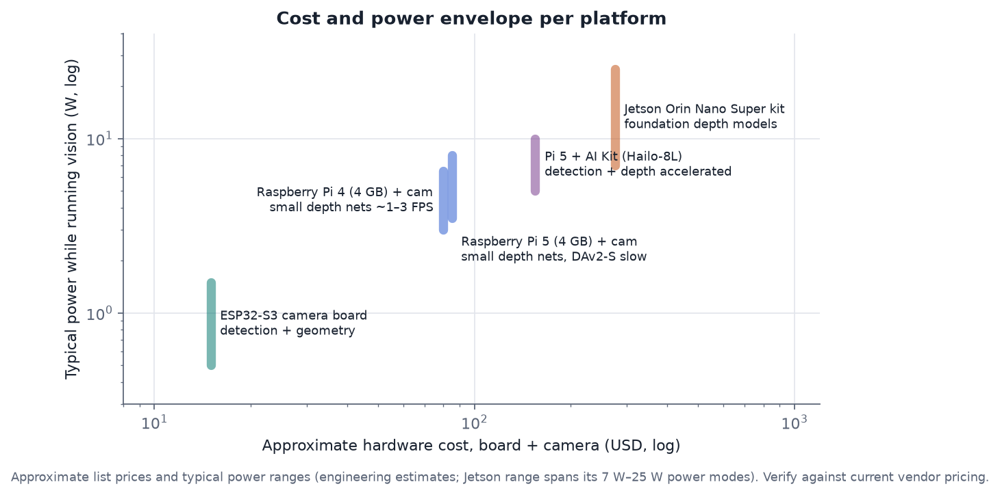
Fig. 14approximate Hardware cost against power. The ESP32-S3 sits one order of magnitude below the Pi on both axes.
Platform
Detector
Geometry / MLP
Dense metric depth
Power
Approx. cost
ESP32-S3
~7–8 FPS person @224 pub
Free
No
0.5–1.5 W
$10–20
Pi 4
A few FPS (small YOLO)
Free
FastDepth-class only
3–6 W
~$60 + cam
Pi 5
~5–20 FPS small YOLO, CPU
Free
FastDepth-class ok; DAv2-S slow
3.5–8 W
~$60–80 + cam
Pi 5 + Hailo-8L
Real-time
Free
CNN depth real-time
5–10 W
+ ~$70
Jetson Orin Nano
Real-time
Free
ViT-S/B metric depth
7–25 W
~$250
Pi and Jetson FPS ranges are estimates from typical community benchmarks. Verify them on your own export before planning around them.
Pedestrians on KITTI and nuScenes; beats a stereo baseline at long range
Real-time on GPU
Genuine object distance
DisNet (Haseeb et al. 2018)
PC; railway and road cameras
YOLO box features → MLP
Own dataset; long-range obstacles
n/r
Genuine object distance
Dist-YOLO (Vajgl et al., Applied Sciences 2022)
GPU
YOLOv3 with per-box distance output
KITTI objects
~YOLO speed
Genuine object distance
Zhu & Fang, ICCV 2019
GPU
ROI features + keypoint regressor
KITTI object distance dataset
n/r
Genuine object distance
Hobbyist "distance with OpenCV" (pinhole + known width)
Pi 3/4, laptop webcams
Size prior, single class (faces, A4 sheet)
Typically under 10% at 0.5–5 m, controlled scenes; rarely rigorously measured
Real-time
Genuine, single class
FastDepth demos
Jetson TX2
Dense depth CNN
NYU indoor RMSE 0.604 m
178 FPS GPU pub
Dense metric (indoor)
Depth Anything / MiDaS on Pi (community)
Pi 4 / 5
Relative depth
No metres
Seconds per frame
Relative only
ESP-DL pedestrian / espdet examples
ESP32-S3-EYE, ESP32-P4
INT8 detector
Detection only
~125 ms @224 pub
Detection, no distance
Plumerai People Detection
ESP32-S3
Commercial people detector
Detection only
303 ms (3.3 FPS) reported
Detection, no distance
Gap in the record
No published, measured ESP32-class implementation of per-object metric distance was found. The detector half exists from Espressif with vendor latency figures. The ranging half (geometry or MLP) is light, but its accuracy on this camera class has not been reported. Phase 1 of this project would fill that gap.
Yes, synthetic images with exact distances can train the regression model, and it is a good fit. The residual MLP only sees box geometry, not pixels, so the domain gap is small: if the detector's boxes on real images resemble the synthetic boxes, the regressor transfers. Recommended setup:
Blender + BlenderProc with rigged humans (MakeHuman or Mixamo), dog and car meshes. Set the camera to your calibrated K, hc and θ. Randomize object height (children to tall adults), pose (stand, walk, sit, crouch), lighting and ground slope (±5°). Export exact range and the tight 2D box.
CARLA (Unreal-based) for outdoor pedestrians and vehicles with weather and night; read distances from the actor transforms.
AirSim is archived by Microsoft. Prefer CARLA or Blender for new work.
Add realistic box noise: run your actual detector on rendered RGB, or jitter the ideal boxes with the measured σ from Phase 1.
Practical data collection with the real camera
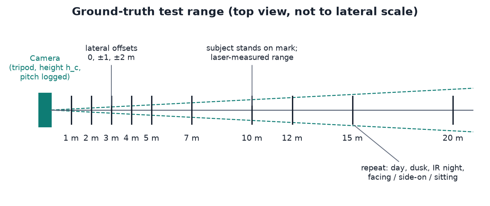
Fig. 15setup Ground-truth test range. Tape marks at fixed distances, verified with a laser rangefinder (±2 mm class), camera on a tripod with logged height and pitch.
Mount the S3 camera at the deployment height (e.g. 2.0 m) and tilt. Record hc with a tape and θ with a phone inclinometer, checked against the horizon row in the image.
Mark 1, 2, 3, 4, 5, 7, 10, 12, 15, 20 m along the axis and at ±1 m and ±2 m lateral offsets. Measure each mark's range with the laser.
Record 3–5 people of different heights (include a child if possible), a dog and a car at each mark: facing, side-on, walking, sitting. Capture at QVGA and VGA in day, dusk and IR night.
Auto-label boxes with a large detector on a PC (YOLO or RF-DETR), correct by hand, and attach the mark distance. Aim for 3–5k boxes across 3 sessions.
Split by session and location, not by frame, so that test scenes are unseen.
Optionally pseudo-label extra unconstrained footage with Depth Anything V2 Metric or Depth Pro, after checking their bias against your laser-measured frames.
09Proposed system architectures
Architecture 1 · ESP32-only
flowchart LR
S["OV2640 / OV3660 QVGA RGB565"] --> P["Resize 224×224 ESP-DL preprocess"]
P --> D["INT8 detector pedestrian / espdet"]
D --> G["Geometry size + ground"]
G --> M["Residual MLP INT8, ~5k params"]
M --> T["IoU tracker + Kalman 1/Z"]
T --> O["JSON via UART / MQTT optional JPEG preview"]
Hardware
ESP32-S3 with 8 MB PSRAM and OV2640/OV3660 (XIAO ESP32S3 Sense, ESP32-S3-EYE or similar)
2 × 150 KB frame buffers in PSRAM; detector arena in SRAM/PSRAM; estimator + tracker under 50 KB est
Latency / FPS
About 125 ms detector pub + capture + about 1 ms ranging → roughly 5–7 FPS est
Power
About 0.5–1.5 W est
Expected accuracy
Standing adults, flat ground, 2–15 m: median about 5–10% per frame, improved by tracking. Dogs and cars via the ground-plane cue: 10–20% target
Extra cost
$0 if an S3 board is on hand; otherwise $15–25
Advantages
Cheapest, lowest power, fully standalone, no network dependency
Limitations
Person-only detectors are fastest, and multi-class COCO detection on the S3 is slower. Short range at QVGA beyond about 15 m. Needs a calibrated mount.
Architecture 2 · ESP32 + Raspberry Pi
flowchart LR
subgraph ESP["ESP32-S3 node"]
S2["Camera VGA"] --> J["JPEG encode"]
J --> W["Wi-Fi stream MJPEG / RTSP-lite"]
end
subgraph PI["Raspberry Pi 5"]
R["Decode"] --> Y["YOLO-n detector NCNN / Hailo"]
R --> Dp["Metric depth FastDepth or DAv2-S"]
Y --> F["Fuse: box median depth + geometry + tracker"]
Dp --> F
F --> O2["MQTT / dashboard"]
end
W --> R
Hardware
ESP32-S3 camera node + Pi 5 (4 GB); optional Hailo-8L AI Kit
Wi-Fi 50–150 ms + Pi inference. With DAv2-S on CPU about 0.2–1 FPS; with FastDepth or Hailo several to 20+ FPS est
Power
ESP 0.5–1.5 W + Pi 4–10 W est
Expected accuracy
In-domain, similar to or slightly better than Architecture 1 thanks to a stronger detector and many classes. Dense depth helps where the ground plane is invalid (stairs, slopes), but needs scale-checking against geometry.
Extra cost
$80–155 (Pi 5 + PSU + SD, optional Hailo)
Advantages
Many classes, room to experiment, dense depth available for research
Limitations
Not standalone; Wi-Fi latency and dropouts; 10× the power; the foundation model's metric scale still needs validation
Architecture 3 · Hybrid embedded (recommended)
flowchart TB
subgraph ONCE["Install time · laptop, once"]
C1["Checkerboard calibration K, distortion"] --> C2["Measure hc, θ check with horizon"]
C2 --> C3["Optional: DAv2 / Depth Pro sanity-check ground plane"]
C3 --> C4["Write calib.bin to flash"]
end
subgraph RUN["Runtime · ESP32-S3"]
A["Capture QVGA"] --> B["INT8 detector"]
B --> E1["Size-prior Z + σ"]
B --> E2["Ground-plane D + σ if feet visible"]
E1 --> FU["Fuse"]
E2 --> FU
FU --> RM["Residual MLP bias + σ"]
RM --> TK["Tracker + Kalman"]
TK --> RL["Reliability rules truncated, sitting, σ too large"]
RL --> OUT3["class · conf · m · σ · ID · ok"]
end
subgraph LEARN["Offline training · PC"]
L1["Test-range + synthetic data"] --> L2["Train residual MLP"]
L2 --> L3["INT8 export ESP-DL / TFLM"]
end
C4 -.-> E1
C4 -.-> E2
L3 -.-> RM
Hardware
Same as Architecture 1. A laptop for calibration and training. No runtime co-processor.
Fig. 16 · Phase dependencies. Phase 3 informs Phase 4 but does not block it.
Phase 1 · Geometric baseline
Calibrate with a 9×6 checkerboard and 20–30 views per resolution (OpenCV).
Record fx, fy, cx, cy, distortion; measure hc and θ.
Implement the size prior, ground plane and fusion on a PC against recorded frames, then on the S3.
Test person, car and dog at all marks (Fig. 15).
Accept: reprojection error <0.5 px; adult standing, 2–15 m, median absolute error ≤10% and p90 ≤20%; results plotted as in Fig. 17.
Phase 2 · Regression
Build a dataset: 3–5k real boxes + 20k synthetic boxes.
Train a box MLP, a residual MLP and a crop CNN; ablate the input features.
Evaluate on held-out sessions and on a second camera mount.
Quantize to INT8 and measure the accuracy drop.
Accept: residual MLP beats Phase 1 median by ≥20% relative; INT8 drop ≤1 percentage point; σ calibrated (68% of errors within 1σ, ±10%); model ≤20 KB.
Phase 3 · Depth-model benchmark
Run FastDepth, Lite-Mono (median-scaled), DAv2-Metric-S and Depth Pro on the same test frames.
Aggregate depth in the lower-central part of each box (median); compare with laser truth.
Record latency and memory on Pi 5 and PC.
Accept: a clear table of box-level error by model and range. Adopt dense depth only if it beats Phase 2 by ≥25% at an acceptable platform cost.
Phase 4 · Embedded deployment
Port the best candidate to the S3 (ESP-DL).
Measure FPS, SRAM/PSRAM high-water marks, flash, and current with a USB meter.
Compare QVGA and VGA; compare against a Pi 5 running the same pipeline.
Accept: ≥4 FPS end-to-end; ≥20% SRAM headroom; ≤1.5 W average; on-device accuracy within 1 percentage point of the PC reference.
Phase 5 · Robustness
Vary distance, size, camera angle and lateral offset.
Test low light, sunlight, shadows, partial occlusion, motion blur, and IR/monochrome (OV2640 without IR-cut plus IR LEDs).
Accept: per-condition error table; the reliability flag catches ≥80% of frames with >25% error; no condition collapses detection recall below 70% without the flag firing.
Phase 6 · Standalone prototype
Enclosure, fixed mount, calib.bin, OTA update.
Output class, confidence, distance, σ, reliability flag and track ID as JSON over UART or MQTT.
Run a 24-hour soak test.
Accept: 24 h without reset; distance readings for a walking person stable to ±5% after 1 s of tracking; documented calibration procedure under 15 minutes.
Validation visuals
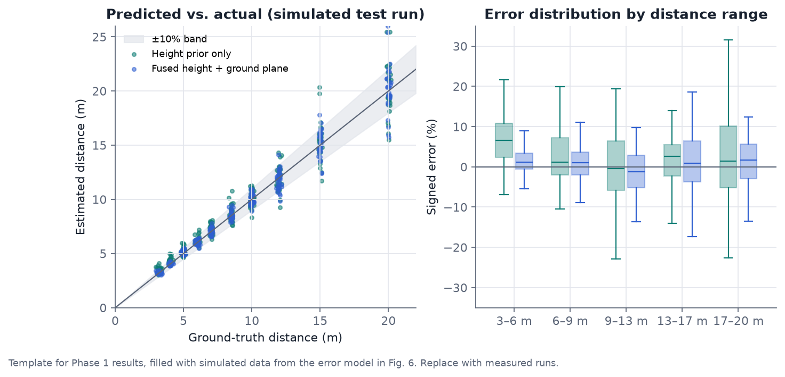
Fig. 17simulated template The plots each test run should produce: predicted against actual with a ±10% band, and signed error by range bin. These are filled with error-model samples (camera 2 m high, tilted 10°, so feet are visible only beyond about 3.2 m). Replace them with Phase 1 measurements.
Detect disagreement between the two cues and down-weight; optional per-zone ground maps
Camera moved or bumped
Every reading shifts
Horizon/vanishing-point check at boot; flag when the walking-person height statistic drifts
Lens distortion (wide lenses)
Edge-of-frame errors
Undistort box corners with calibrated coefficients (cheap: 4 points per box)
Detector box quality at night / IR
Box jitter, missed feet
Fine-tune the detector on IR footage; widen σ; temporal filtering
Small targets beyond 15 m at QVGA
Under 30 px tall, so detection and ranging both degrade
VGA capture with ROI crops; accept a shorter rated range
Metric foundation models and unfamiliar cameras
Scale bias of tens of percent
Use only as a teacher after bias-checking against laser truth
Licenses
Non-commercial weights block a product
Prefer Apache/MIT (DAv2-Small, ESP-DL); check each model card
Vendor latency figures
Differ by IDF version, PSRAM speed and cache settings
Measure on your own board in Phase 4
Unverified figures in this report
Every number marked estimate or model comes from an explicit error model or from engineering reasoning, not from hardware tests on this project. The error-model assumptions are listed in Fig. 6 and in scripts/make_figures.py. None of the architectures have been built or measured yet.
12Final recommendations
Answers to the critical questions
Q1
Can an ESP32-S3 estimate the distance of individual objects with a monocular camera?
Yes. Detection runs at about 7–8 FPS (published), and per-object ranging by geometry plus a tiny MLP costs under 1 ms (estimate).
Q2
Is dense depth estimation necessary?
No. The output is one number per box, and two geometric cues provide it directly. Dense depth is useful only offline (labelling, sanity checks) or on a Pi or Jetson for scenes where the flat-ground assumption fails.
Q3
Can geometric estimation be accurate enough for people and common objects?
For standing adults on flat ground with a calibrated camera: yes, around 5–10% median in practice (2–5% in the idealized model). For cars it is workable with height-based priors. For dogs, children and seated people, the size prior alone is not enough; add the ground-plane cue.
Q4
Would a small regression network beat geometry?
As a residual on top of geometry, yes, on systematic biases such as foreshortening, pose and class priors, when trained on your mount. As a standalone box regressor it beats geometry only on its training camera and generalizes worse.
Q5
Can a lightweight depth network realistically run on an ESP32-S3?
Not at useful resolution or rate: seconds per frame for FastDepth-class compute, limited by activation memory (estimate). A custom 64×48 head is an open research question, not a prototype path.
Q6
Which five approaches should I try first?
(1) the hybrid estimator, (2) calibrated geometry, (3) a DisNet-style box MLP, (4) FastDepth or Lite-Mono on a Pi as a lightweight-depth reference, (5) DAv2-Metric-Small or Depth Pro as an offline teacher and benchmark.
Q7
What is the best architecture overall?
Architecture 3 (hybrid embedded) gives the lowest cost and power, adequate latency, explainable accuracy and no extra runtime hardware.
Q8
What is the minimum additional hardware?
None for compute if you have an ESP32-S3 with PSRAM. Add an S3 camera board ($15–25) if the existing hardware is a classic ESP32-CAM, plus a laser rangefinder or long tape and a printed checkerboard for calibration and ground truth.
Q9
What is the most practical first prototype?
Run the S3 with the ESP-DL pedestrian detector at 224×224 on a fixed tripod mount, with calibrated geometry (size + ground fusion) and an IoU tracker, printing JSON over UART. Phase 1 can be finished in days.
Q10
What accuracy is realistic, and under what conditions?
Standing adults, flat ground, camera 1.5–3 m high, daylight, 2–15 m: median 5–10% per frame and better after tracking. Beyond 15 m at QVGA, at night, with occlusion, or with seated people and dogs: 15–30% unless the ground cue is available. Treat these as targets for Phase 1, not as measurements.
Recommended path
Week 1: calibrate, mount, and build the PC geometry baseline on recorded frames (Phase 1).
Week 2: port to the ESP32-S3 with the ESP-DL detector, tracker and JSON output (Architecture 1 / 3 core).
Weeks 3–4: collect test-range data plus synthetic data; train and INT8-export the residual MLP (Phase 2).
In parallel, optionally: benchmark DAv2-Metric-S and FastDepth on a Pi or PC against the same laser truth (Phase 3), to settle whether dense depth adds anything.
13Research papers and references
Object-level distance
Haseeb, Guan, Ristić-Durrant, Gräser. "DisNet: A novel method for distance estimation from monocular camera." PPNIV workshop, IROS 2018.
Bertoni, Kreiss, Alahi. "MonoLoco: Monocular 3D Pedestrian Localization and Uncertainty Estimation." ICCV 2019. paper · code
Zhu, Fang. "Learning Object-Specific Distance From a Monocular Image." ICCV 2019. arXiv:1909.04182
Vajgl, Hurtik, Nejezchleba. "Dist-YOLO: Fast Object Detection with Distance Estimation." Applied Sciences 12(3), 2022.
Monocular depth
Wofk, Ma, Yang, Karaman, Sze. "FastDepth: Fast Monocular Depth Estimation on Embedded Systems." ICRA 2019. arXiv:1903.03273 · project · code
Zhang, Nex, Vosselman, Kerle. "Lite-Mono." CVPR 2023. paper · code
Godard, Mac Aodha, Firman, Brostow. "Digging Into Self-Supervised Monocular Depth Estimation" (Monodepth2). ICCV 2019. arXiv:1806.01260 · code